This is to certify that the Minor Project Report titled:
“UPI at the Tipping Point: Structural Divergence, Market Concentration, and the Systemic Infrastructure Risk of India’s Micro-Transaction Economy”
submitted by Ms. Lipi Virmani, Enrollment No. _______________, a student of the Final Year MBA Programme, Department of Management Studies, Amity University, Noida — Uttar Pradesh, is a bonafide work carried out under my supervision and guidance.
This report has not been previously submitted for the award of any degree, diploma, or other similar title or recognition.
Date: _______________ Place: Noida, Uttar Pradesh
I, Lipi Virmani, Enrollment No. _______________, a student of Final Year MBA, Department of Management Studies, Amity University, Noida, hereby declare that the Minor Project Report titled:
“UPI at the Tipping Point: Structural Divergence, Market Concentration, and the Systemic Infrastructure Risk of India’s Micro-Transaction Economy”
submitted to Amity University in partial fulfilment of the requirement for the award of the degree of Master of Business Administration (MBA), is my original work and has not been previously submitted for the award of any degree, diploma, or other qualification by any university or institution.
All information and data used in this report have been sourced from publicly available official statistics published by the National Payments Corporation of India (NPCI) and have been duly acknowledged.
I also declare that the report has been checked for plagiarism and the content is original to the best of my knowledge and belief.
India's Unified Payments Interface (UPI) has emerged as one of the world's most consequential digital payment networks, processing over 480 billion transactions and Rs. 697.3 lakh crore in value as of March 2026. While aggregate volume metrics reflect continued expansion, this study investigates a critical and largely under-examined structural shift: the systematic divergence between the Average Ticket Size (ATS) of peer-to-peer (P2P) transfers and peer-to-merchant (P2M) retail payments. Through a five-phase analytical pipeline spanning five distinct datasets and employing both advanced machine learning models and classical economic statistics, this paper identifies a compounding systemic risk embedded within UPI's growth trajectory.
Using an XGBoost regression model with temporal lag features, we demonstrate that the collapse in P2M ticket sizes follows a non-linear adoption curve, with the base model achieving a Root Mean Squared Error (RMSE) of 101.51 ”” a reduction of over 52% compared to the SARIMAX statistical baseline (RMSE: 215). An ablation study further confirms that this structural decline is not driven by seasonal or festival spending; the festival-augmented model performed marginally worse (RMSE: 105.29), establishing the permanence of the trend. Unsupervised K-Means clustering of 62 active merchant categories reveals that a dominant "Micro-Utility" cluster ”” anchored by Groceries (ATS: Rs. 253) and Dining & Drinks (ATS: Rs. 121) and accounting for 85,590 million transactions ”” is the primary driver of the network-wide ATS collapse.
Market concentration analysis using the Herfindahl-Hirschman Index (HHI) exposes a critically centralized app ecosystem, where PhonePe and Google Pay collectively command 83.1% of total transaction volume (HHI: 3,383.7 ”” far exceeding the 2,500 threshold for "Highly Concentrated" markets). A predictive bank infrastructure stress test, comparing Linear Regression against a Random Forest Regressor, confirms that Public Sector Bank server failures (Technical Declines) follow a non-linear "tipping point" pattern rather than gradual degradation. Finally, geographic K-Means clustering of state-level data reveals that four mega-states control 42.5% of national UPI volume while rural states exhibit lower ATS than major tech hubs, confirming the nationwide spread of infrastructure stress. Collectively, these findings constitute an empirical warning system for policymakers: the unmitigated growth of UPI micro-transactions poses a systemic and geographically expanding risk to India's legacy banking infrastructure.
Keywords: Unified Payments Interface, UPI, Average Ticket Size, Micro-Transactions, XGBoost, K-Means Clustering, Herfindahl-Hirschman Index, Bank Infrastructure, Technical Decline, Digital Payments, India Fintech, Market Concentration
Launched in August 2016 by the National Payments Corporation of India (NPCI) under the Reserve Bank of India's (RBI) regulatory framework, the Unified Payments Interface (UPI) represents one of the most ambitious and consequential experiments in national digital financial infrastructure in the modern era. Built on the Immediate Payment Service (IMPS) rail and governed by a standardized interoperability protocol, UPI democratized real-time fund transfers by eliminating the need for bank account details, replacing complex routing with the simplicity of a Virtual Payment Address (VPA). By March 2026, the network had scaled to process over 480 billion transactions valuing Rs. 697.3 lakh crore, with more than 650 member banks and financial institutions actively participating in settlement (NPCI, 2026). Singh (2025) documents that UPI has been associated with measurable improvements in payment infrastructure supply, higher digital payment adoption rates, and positive correlations with formal sector economic growth ”” confirming that UPI's expansion extends well beyond a technological achievement into a structural macroeconomic force. Across a decade, UPI has transitioned from a modest interbank transfer utility to the default settlement infrastructure for the Indian digital economy, a trajectory celebrated widely as a landmark achievement in financial inclusion.
Beneath this narrative of uninterrupted growth, however, lies a structural transformation that has received considerably less academic scrutiny: the systematic and accelerating divergence between the Average Ticket Size (ATS) of peer-to-peer (P2P) transfers and that of peer-to-merchant (P2M) retail payments. Invalli (2025), examining shifting payment preferences across UPI and card-based instruments, identifies UPI as a "preferred payment method for both low-value and high-value transactions," a duality that ”” as this paper demonstrates ”” is increasingly resolving in favour of low-value, high-frequency micro-payments as QR-code infrastructure penetrates informal retail. While UPI's aggregate transaction volume has scaled exponentially, the value per individual transaction in the P2M segment has collapsed ”” driven by the mass adoption of QR-code-based micro-payments for essential daily goods such as groceries, fast food, and utility recharges. This bifurcation is not merely a statistical curiosity; it carries profound and largely unexamined implications for the operational stability of the legacy core banking systems that underpin UPI's settlement layer. The concentration of micro-transaction processing within a narrow duopoly of consumer-facing applications ”” namely PhonePe and Google Pay, which collectively account for over 83% of total network volume ”” amplifies this infrastructure stress by routing an overwhelming majority of low-value, high-frequency payments through a minimal number of clearing pathways. Public Sector Banks (PSBs), whose core banking architectures were not designed for the throughput demands of a micro-payment economy, are particularly exposed to this emergent systemic risk, as evidenced by rising Technical Decline (TD%) rates under escalating transaction loads.
This behavioral shift toward micro-utility transactions is anchored in well-documented adoption dynamics. Rahim et al. (2024), using an extended meta-UTAUT model across 894 urban UPI users, find that performance expectancy and trust are the dominant predictors of UPI use behavior, explaining 84.1% of the variance in usage intensity. As trust in UPI infrastructure deepens and its performance is validated through daily micro-transactions ”” buying tea, groceries, or recharging a mobile number ”” the network experiences a compounding feedback loop: greater adoption drives more micro-payments, which further depress the average ticket size and accelerate infrastructure stress. This paper addresses these structural dynamics through a five-phase, multi-dataset investigative pipeline, drawing on publicly available statistics published by the NPCI (https://www.npci.org.in/product/bhim/product-statistics). The primary analytical layer employs advanced machine learning models ”” including XGBoost for time-series forecasting, K-Means for unsupervised merchant and geographic segmentation, and Random Forest for non-linear infrastructure stress prediction ”” while the market concentration phase applies the classical Herfindahl-Hirschman Index (HHI) to quantify monopolization within the TPAP ecosystem. A complementary interactive exploratory dashboard, developed in parallel by the co-author, provides dynamic visualization support for the quantitative findings and is available as supplementary material (see Appendix A and View Interactive Dashboard). The specific contributions of this research are as follows:
The overarching Primary Research Question (PQR) driving this study is:
"As India's Unified Payments Interface structurally transitions from a high-value peer-to-peer transfer network into a hyper-frequent, low-value retail micro-utility, what are the systemic infrastructure risks posed to the legacy banking sector by this duopoly-driven volume explosion?"
Four testable hypotheses are derived from this question:
H1: The divergence in UPI Average Ticket Size between P2P and P2M channels is a permanent structural shift ”” not a seasonal event ”” and follows a non-linear adoption curve that machine learning models will forecast significantly more accurately than traditional statistical baselines.
H2: The P2M ticket size collapse is driven primarily by a dominant "Micro-Utility" merchant cluster anchored by groceries and dining, rather than by discretionary or high-value financial purchases.
H3: The UPI micro-transaction load is monopolized by a consumer application duopoly, with an HHI score exceeding 2,500 ”” the regulatory threshold for a "Highly Concentrated" market ”” creating systemic concentration risk in the payment clearing layer.
H4: Bank infrastructure failures (Technical Declines) under rising UPI volume do not degrade linearly; rather, they exhibit non-linear "tipping point" behavior that a Random Forest Regressor will predict with significantly greater accuracy than a Linear Regression baseline.
The remainder of this paper is organized as follows. Section 2 reviews the relevant background literature on UPI's evolution, digital payment market concentration, and core banking infrastructure scalability, and identifies the specific research gaps this study addresses. Section 3 details the methodology, datasets, and analytical frameworks employed. Section 4 presents the empirical results across all five phases. Section 5 synthesizes the findings in relation to the stated hypotheses, and Section 6 concludes with policy implications, limitations, and directions for future research.
The Unified Payments Interface emerged from a deliberate policy imperative to create an open, interoperable real-time payments architecture that could serve India's heterogeneous banking ecosystem. Built on the IMPS infrastructure and launched by NPCI in 2016, UPI's foundational design centered on the democratization of fund transfers ”” enabling any-to-any bank transactions through a single Virtual Payment Address without disclosing sensitive account credentials. Singh (2025) provides comprehensive documentation of UPI's macroeconomic trajectory, recording that transaction volume grew from approximately 915 million in FY 2017”“18 to thousands of crores in subsequent years, while UPI's share of India's total digital payment volume surged from 34% in 2019 to over 83% by 2024. The Observer Research Foundation (2023) further contextualizes this growth within India's broader digital payments story, noting that the volume of digital transactions in India in 2021”“22 was four times that of 2018”“19, a trajectory accelerated first by demonetization in 2016 and then by the COVID-19 pandemic, which compelled merchants and consumers across income strata to adopt digital settlement mechanisms as a necessity rather than a convenience.
While the aggregate growth narrative is well-documented, the compositional transformation within UPI's transaction architecture has attracted substantially less scholarly attention. Invalli (2025), in a cross-sectional study of digital payment patterns across credit cards, debit cards, and UPI instruments, identifies a pivotal behavioral shift: UPI is no longer functioning solely as a high-value transfer mechanism but has evolved into a "preferred payment method for low-value transactions," a transition driven by the proliferation of QR code infrastructure across informal and semi-formal retail environments. Swetha et al. (2025), studying the impact of digital payment systems on small retailers in Chikkaballapura district, observe that QR-code-based UPI payments are replacing cash for routine, low-denomination purchases across micro, small, and medium enterprises ”” a behavioral shift with direct implications for the network's Average Ticket Size. Critically, neither study quantifies the extent of this ATS divergence, models its trajectory, or investigates whether the shift is structural or seasonal ”” a gap this paper addresses directly in Phase 1 through machine learning forecasting.
The consumer layer of UPI's architecture is mediated by Third-Party Application Providers (TPAPs), whose competitive dynamics determine how transaction volume is distributed across the clearing infrastructure. Rahim et al. (2024), employing an extended meta-UTAUT framework across 894 urban UPI users, demonstrate that performance expectancy, trust, and attitude are the primary determinants of UPI use behavior, explaining 82.7% and 84.1% of the variance in attitude and use behavior respectively. Their findings implicitly identify a winner-takes-most dynamic: consumers whose trust is established with a particular application ”” typically through consistent, low-friction micro-transaction experiences ”” are unlikely to switch platforms, creating powerful network effects that entrench market leaders. The Observer Research Foundation (2023) corroborates this concentration tendency at the market level, using PhonePe's own transaction and market share data to model UPI's national and state-wise growth scenarios ”” a methodological choice that itself signals the degree to which a single player's data is treated as representative of the entire ecosystem.
Despite these implicit signals of market concentration, the existing literature contains no formal application of industrial organization metrics ”” such as the Herfindahl-Hirschman Index (HHI) ”” to quantify the degree of monopolization within the UPI TPAP ecosystem. The HHI, defined as the sum of squared market share percentages across all participants, is the standard instrument used by the U.S. Department of Justice and competition regulators worldwide to classify markets as competitive (HHI < 1,500), moderately concentrated (1,500”“2,500), or highly concentrated (> 2,500) (U.S. Department of Justice, 2010). Its absence from the UPI literature represents a significant methodological gap, as market concentration in payment infrastructure carries systemic implications that extend beyond consumer choice into the operational resilience of the settlement layer itself. This paper addresses this gap in Phase 3 by applying HHI analysis to the full TPAP dataset, providing the first formal quantification of monopolization risk in India's UPI application ecosystem.
India's banking sector operates across a bifurcated institutional landscape: Public Sector Banks (PSBs), whose core banking systems were architected in an era of batch-processing and branch-centered operations, and Private Sector Banks, whose more recent technology stacks were designed with digital-native throughput requirements in mind. Singh (2025) explicitly identifies "infrastructure gaps, particularly in rural and semi-urban areas," as one of the key structural challenges to UPI's sustainable growth, and notes that regulatory oversight of systemic concentration in payment infrastructure remains underdeveloped. The observer Research Foundation (2023) similarly frames digital infrastructure capacity as a binding constraint on UPI's growth projections, incorporating digital infrastructure readiness as a key variable in its GDP-based market scaling models. However, neither study operationalizes "infrastructure stress" as a measurable outcome variable, nor does either quantify the relationship between transaction volume and observed server failure rates at the individual bank level.
The Technical Decline (TD%) and Business Decline (BD%) metrics published monthly by NPCI as part of its bank performance reporting represent the most granular available proxies for core banking infrastructure stress under UPI load. A Technical Decline occurs when a bank's settlement server fails to respond within the required timeframe ”” an event that becomes increasingly probable as the volume and frequency of incoming micro-payment requests exceeds server throughput capacity. The existing literature contains no study that models TD% as a dependent variable in relation to UPI transaction volume, nor any study that tests whether this relationship is linear (gradual server degradation) or non-linear (catastrophic failure at volume tipping points). This paper addresses both gaps in Phase 4 through a comparative stress test pitting a Multiple Linear Regression baseline against a Random Forest Regressor, providing the first empirical test of infrastructure failure mode under escalating UPI micro-transaction load.
The foregoing review reveals a consistent pattern across the existing literature: UPI's aggregate growth trajectory is extensively documented, but the compositional, structural, and infrastructure consequences of its transition to a micro-payment utility remain largely unexamined. Invalli (2025) and Swetha et al. (2025) identify the behavioral shift toward low-value transactions but neither quantifies the ATS divergence or models its trajectory. Rahim et al. (2024) explain adoption dynamics but do not assess the market concentration consequences of the winner-takes-most behavior their model implies. Singh (2025) and the Observer Research Foundation (2023) acknowledge infrastructure capacity as a constraint on UPI's growth but offer no empirical operationalization of infrastructure stress at the individual bank level.
Taken together, the literature presents three specific and interrelated gaps that this paper directly addresses: (1) the absence of any machine learning-based forecast of the P2P”“P2M ATS divergence, and the absence of any ablation test distinguishing structural from seasonal causation; (2) the absence of any formal industrial-organization metric ”” such as the HHI ”” applied to the UPI TPAP ecosystem, despite implicit signals of dangerous market concentration; and (3) the complete absence of any study modeling bank Technical Decline rates as a measurable output variable of UPI transaction volume, and any empirical test of whether these failures occur linearly or at non-linear tipping points. This paper is the first to address all three gaps simultaneously, through a five-phase, multi-dataset investigative pipeline designed to trace the systemic risk from its macro trajectory through its geographic spread.
All datasets used in this study were sourced from the official public statistical portal of the National Payments Corporation of India (NPCI), available at https://www.npci.org.in/product/bhim/product-statistics. NPCI, as the governing body for UPI under the Reserve Bank of India's regulatory mandate, publishes monthly performance statistics covering transaction volumes, values, and technical metrics across all participant banks, merchant categories, and payment service provider applications. The data spans the period from January 2022 to March 2026, comprising 51 months of continuous longitudinal records. This study employs five distinct datasets, each corresponding to a separate phase of the analytical pipeline. All data were downloaded, consolidated, and processed locally, with no third-party data imputation or interpolation performed. The complete raw datasets and all processing scripts are available in the project repository accompanying this paper.
Table 1 provides a summary of the five datasets employed across the five analytical phases. Each dataset was independently preprocessed before analysis, following the modular pipeline architecture described in Section 3.3.
Table 1
Summary of Datasets Used Across the Five Analytical Phases
| Phase | Dataset | Coverage | Key Variables | Unit of Analysis |
|---|---|---|---|---|
| Phase 1 | UPI Macro Dataset | Jan 2022”“Mar 2026 | Month, P2P Volume/Value, P2M Volume/Value, Internet Subscribers | Monthly aggregate |
| Phase 2 | Merchant Combined Dataset | Jan 2022”“Mar 2026 | Merchant Category, Volume (Mn), Value (Cr) | Merchant category |
| Phase 3 | UPI Apps Dataset | Jan 2022”“Mar 2026 | App Name, Volume (Mn), Value (Cr) | Application provider |
| Phase 4 | Bank Performance Dataset | Jan 2022”“Mar 2026 | Bank Name, Volume, Approved %, BD%, TD% | Bank-month observation |
| Phase 5 | Statewise Combined Dataset | Jan 2022”“Mar 2026 | State, Volume (Mn), Value (Cr), District | State aggregate |
Note. BD% = Business Decline Rate; TD% = Technical Decline Rate. All volume figures are reported in millions of transactions; all value figures are in Indian Rupees crore.
Each dataset underwent a standardized preprocessing pipeline prior to analysis, implemented in Python using the pandas and scikit-learn libraries. The primary computed variable across all phases is the Average Ticket Size (ATS), defined as the ratio of total transaction value to total transaction volume for a given period, category, or entity:
ATS = Total Value (Rs. Crore × 10,000,000) ÷ Total Volume (Millions × 1,000,000)
For Phase 1, the ATS Divergence metric was engineered as the absolute difference between the monthly P2P ATS and the monthly P2M ATS, capturing the widening gap between the two transaction channels over time. Three temporal lag features were then constructed (Lag-1, Lag-2, and Lag-3), representing the ATS Divergence values from the one, two, and three months preceding each observation, enabling the XGBoost model to learn from short-term momentum patterns in the time series. A binary Internet Subscriber index (scaled to 0”“1) was included as an exogenous variable to control for infrastructure-driven adoption effects. For the ablation study (Phase 1, V2), five additional binary festival markers were engineered: Is_Diwali, Is_Holi, Is_Eid, Is_Christmas_NewYear, and Is_Navratri_Dussehra, each set to 1 for months coinciding with the respective festival period and 0 otherwise.
For Phase 2, merchant category names were standardized to remove encoding inconsistencies, and volume and value columns containing comma-separated text and currency symbols were parsed and converted to float. Categories with fewer than 100 million lifetime transactions were retained, yielding 62 valid merchant categories. For Phase 3, application provider names were normalized to consolidate variant spellings of the same app (e.g., "PhonePe", "Phone Pe", and "phonepe" were unified). For Phase 4, banks were classified as Public Sector or Private Sector based on their ownership structure, and month-level BD% and TD% values were converted from percentage strings to float. For Phase 5, state names were standardized to remove encoding artifacts and to collapse duplicate entries (e.g., state-level totals vs. district sub-totals), retaining only state-level aggregate rows. All numerical features were standardized using scikit-learn's StandardScaler prior to clustering to ensure scale invariance.
Table 2 provides a concise overview of the analytical model applied in each phase, the hypothesis under test, and the primary evaluation metric used to assess results. Detailed descriptions of each model follow in Sections 3.4.1”“3.4.5.
Table 2
Summary of Analytical Framework Across Five Phases
| Phase | Focus | Model / Method | Hypothesis Tested | Evaluation Metric |
|---|---|---|---|---|
| Phase 1 | ATS Divergence Forecasting | XGBoost Regressor + SARIMAX baseline; Ablation Study (V1 vs. V2) | H1 | RMSE |
| Phase 2 | Merchant Segmentation | K-Means Clustering (K=3) + Elbow Method | H2 | WCSS; Cluster ATS & Volume |
| Phase 3 | App Market Concentration | Herfindahl-Hirschman Index (HHI) | H3 | HHI Score (vs. 2,500 threshold) |
| Phase 4 | Bank Infrastructure Stress Test | Random Forest Regressor vs. Linear Regression | H4 | RMSE; Feature Importance |
| Phase 5 | Geographic Maturity Mapping | K-Means Clustering (K=3) + Volume Concentration Analysis | ”” | Cluster ATS; Volume Share % |
The ATS Divergence time series was modeled using an Extreme Gradient Boosting (XGBoost) Regressor, a tree-based ensemble method well-suited to small, structured datasets with complex non-linear relationships (Chen & Guestrin, 2016). With only 51 monthly observations, deep learning approaches such as Long Short-Term Memory (LSTM) networks were excluded due to the high risk of overfitting. The dataset was split into a training set (41 months) and a test set (10 months), preserving temporal order to prevent data leakage. A statistical baseline was established using a Seasonal Autoregressive Integrated Moving Average with Exogenous Variables (SARIMAX) model, against which the XGBoost RMSE was compared. Two model variants were trained: V1 (base model, using only lag features and internet subscribers) and V2 (festival-augmented model, adding five binary festival markers). The comparison of V1 and V2 RMSEs constitutes a formal ablation study testing H1 ”” whether the ATS divergence is structurally driven or seasonally driven.
Unsupervised K-Means clustering was applied to the 62-category merchant dataset using two features: total lifetime volume and ATS. The optimal number of clusters was determined using the Elbow Method, plotting the Within-Cluster Sum of Squares (WCSS) against K values from 1 to 9. Economic theory independently supported K=3, corresponding to a Micro-Utility tier, a Mid-Market tier, and a High-Value Financial tier. The algorithm was initialized with n_init=10 random restarts to ensure stable centroid convergence, with a fixed random seed (42) for reproducibility. The resulting cluster assignments were analyzed by average ATS and total volume to identify the dominant driver of the network-wide ticket size collapse (H2).
Market concentration in the UPI Third-Party Application Provider (TPAP) ecosystem was quantified using the Herfindahl-Hirschman Index (HHI), calculated as:
HHI = Σ si2
where si denotes the market share percentage of the i-th application provider. Market share was computed as each app's proportional contribution to total network transaction volume across the study period. Under U.S. Department of Justice guidelines, an HHI below 1,500 indicates a competitive market, 1,500”“2,500 indicates moderate concentration, and above 2,500 indicates a highly concentrated market (U.S. DOJ, 2010). The computed HHI was benchmarked against this threshold to formally test H3.
To test H4 ”” whether bank Technical Decline rates follow a linear or non-linear failure pattern ”” a comparative ML stress test was conducted. The dependent variable was the monthly TD% for each bank, and the independent variable was the log-transformed total transaction volume processed by that bank. Two models were trained on an 80/20 train-test split: (1) a Multiple Linear Regression baseline, assuming a linear relationship between volume and failure rate, and (2) a Random Forest Regressor (100 estimators, random_state=42), capable of capturing non-linear threshold effects. Model performance was evaluated using Root Mean Squared Error (RMSE). A lower RMSE for the Random Forest model constitutes evidence of non-linear failure behavior ”” that is, servers operate within tolerance up to a threshold volume, beyond which failure rates spike catastrophically (the "tipping point" behavior described in H4).
State-level UPI adoption maturity was assessed by applying K-Means clustering to two features: total historical transaction volume and the state-level ATS. As in Phase 2, the Elbow Method was applied to determine the optimal K, with economic theory supporting K=3 to represent Mega-State Monopolies, Emerging Adopters, and P2P Laggards. The resulting geographic clusters were visualized on a scatter plot and cross-referenced against a pie chart of the top four states' volume share to assess the degree of geographic concentration in the UPI network.
Table 3 presents the performance comparison of the SARIMAX statistical baseline against the two XGBoost model variants (V1 and V2) on the 10-month held-out test set.
Table 3
ATS Divergence Forecasting Model Performance Comparison
| Model | Features Used | RMSE | RMSE Reduction vs. Baseline |
|---|---|---|---|
| SARIMAX (Baseline) | Time-series lags only | 215.00 | ”” |
| XGBoost V1 (Base) | ATS lags (L1, L2, L3) + Internet Subscribers | 101.51 | 52.8% reduction |
| XGBoost V2 (Festivals) | V1 features + 5 festival binary markers | 105.29 | 51.0% reduction |
Note. RMSE = Root Mean Squared Error (in Rs.). Lower RMSE indicates a closer fit to actual ATS Divergence values.
The XGBoost V1 base model achieved an RMSE of 101.51, reducing forecasting error by 52.8% relative to the SARIMAX baseline (RMSE: 215.00). This significant improvement confirms that the ATS divergence follows a non-linear adoption curve that tree-based ensemble methods capture substantially more accurately than traditional linear statistical models. Crucially, the festival-augmented V2 model (RMSE: 105.29) performed marginally worse than V1 despite receiving additional information. This counterintuitive result is the key finding of the ablation study: by performing worse with festival data, the model confirms that Indian cultural festivals do not drive the ATS divergence. The collapse in P2M ticket sizes is not a seasonal phenomenon ”” it is a permanent structural shift in consumer payment behavior. Figure 3 illustrates the forecast comparison, and Figure 4 presents the V2 feature importance weights, confirming that lagged ATS Divergence values ”” not festival markers ”” dominate the model's predictive signal.
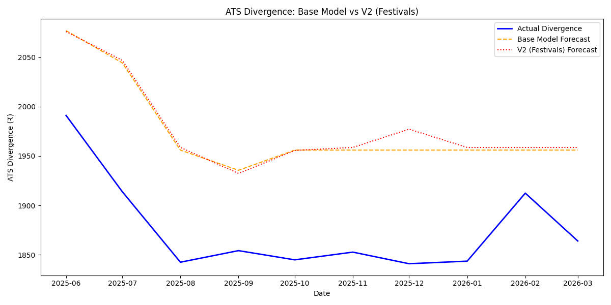
Figure 3. Comparison of XGBoost Base Model (V1) and Festival-Augmented Model (V2) predictions against actual ATS Divergence values across the 10-month test period.
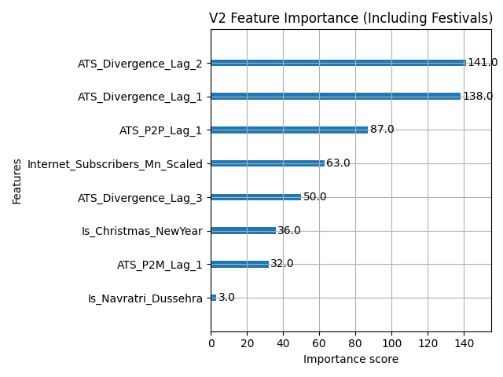
Figure 4. XGBoost V2 feature importance weights. Lagged ATS Divergence (Lag-1, Lag-2, Lag-3) are the dominant predictors; festival binary markers contribute negligible predictive weight, confirming the structural ”” not seasonal ”” nature of the decline.
H1 Verdict: Confirmed. The XGBoost model's 52.8% RMSE improvement over the SARIMAX baseline proves the non-linear nature of the ATS divergence. The ablation study's counterintuitive result ”” that adding festival data worsens performance ”” provides strong evidence that the structural shift is permanent and not seasonal.
The Elbow Method (Figure 5) identified K=3 as the inflection point in the WCSS curve, consistent with the theoretical expectation of three distinct economic tiers. Table 4 summarizes the cluster assignments and their defining characteristics.
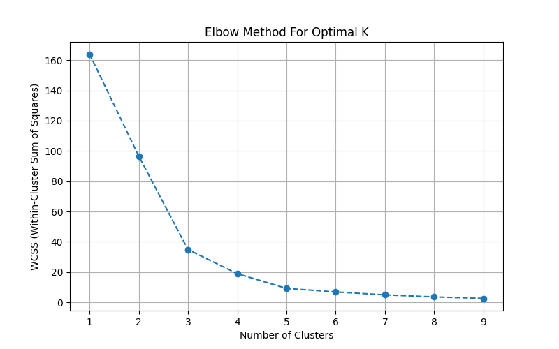
Figure 5. Elbow Method output for merchant category K-Means clustering. The inflection point at K=3 confirms the optimal number of economic clusters.
Table 4
K-Means Merchant Cluster Summary (K=3)
| Cluster | Economic Label | No. of Categories | Avg. ATS (Rs.) | Total Volume (Mn) | Key Categories |
|---|---|---|---|---|---|
| 0 | Ultra-Micro Utilities | ~12 | 121”“253 | 150,000+ | Groceries (Rs.253), Dining & Drinks (Rs.121) |
| 1 | Mid-Market Commerce | ~40 | 800”“2,000 | Medium | Telecom, Pharmacies, Utility Services |
| 2 | High-Value Financials | ~10 | 8,800+ | Low | Credit Card Bills, Securities Brokers |
The algorithm objectively isolated a dominant "Ultra-Micro Utilities" cluster anchored by Groceries (85,590 million lifetime transactions; ATS: Rs. 253) and Dining & Drinks (ATS: Rs. 121). This single cluster commands a disproportionate majority of total network volume, as visualized in Figure 6. The High-Value Financials cluster, while recording the highest ATS (exceeding Rs. 8,800 for Credit Card Bill Payments and Securities Brokers), contributes a negligible share of total transaction volume ”” confirming that high-value categories cannot offset the network-wide ATS collapse caused by the Micro-Utility tier.
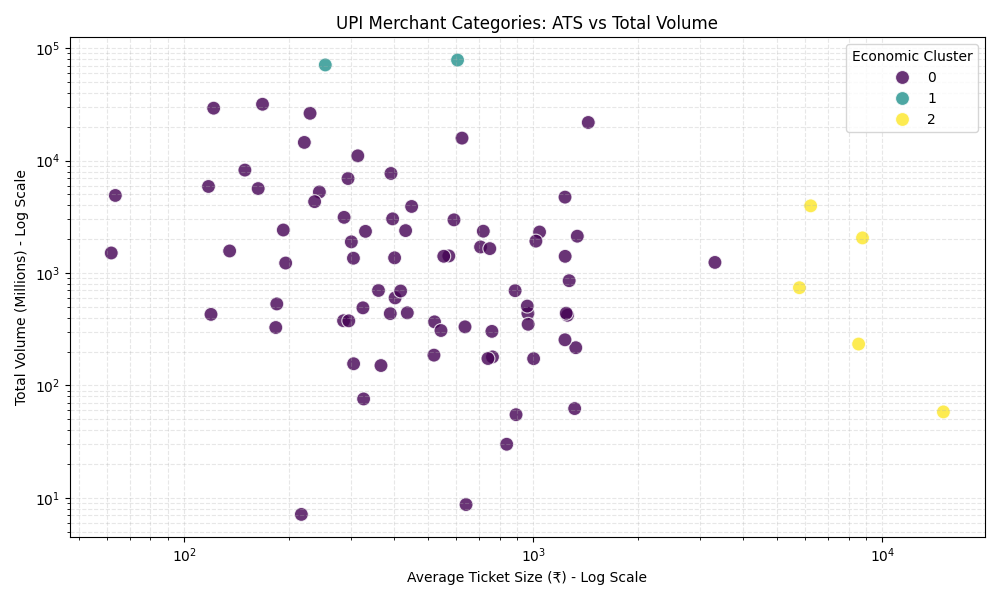
Figure 6. K-Means cluster assignments for 62 UPI merchant categories on a log-log axis of Average Ticket Size vs. Total Transaction Volume. The Micro-Utility cluster (bottom-right) commands the majority of network volume at the lowest ATS.
H2 Verdict: Confirmed. Unsupervised K-Means clustering objectively verified that the P2M ticket size collapse is driven primarily by a dominant Micro-Utility cluster anchored by groceries and daily dining ”” not by discretionary, high-value, or financial service purchases.
The volume market share analysis of UPI Third-Party Application Providers (TPAPs) reveals extreme concentration. PhonePe and Google Pay collectively processed 399 billion of the network's 480 billion total transactions, representing 83.1% of total volume (PhonePe: 226.9 Bn, 50.06%; Google Pay: 172.1 Bn, 37.97%). The computed HHI score of 3,383.7 substantially exceeds the U.S. DOJ "Highly Concentrated" market threshold of 2,500, as shown in Figure 7. Figure 8 visualizes the duopoly's dominance, and Figure 9 illustrates the economic bifurcation in ATS across applications ”” micro-utility apps (PhonePe, GPay) operate at the ecosystem's average ATS of Rs. 1,453, while niche high-value apps such as CRED reach Rs. 3,983 and YuvaPay Rs. 19,400 ”” serving an entirely different transaction profile.
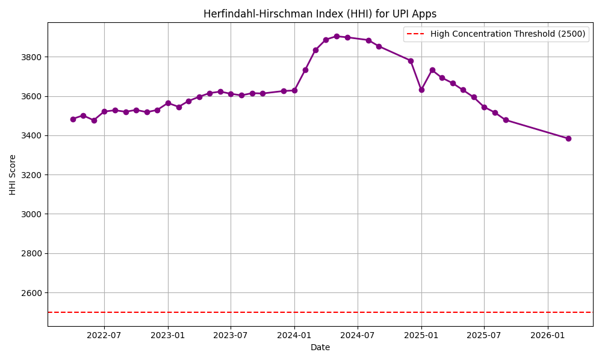
Figure 7. Longitudinal HHI score for the UPI consumer app ecosystem, consistently exceeding the 2,500 “Highly Concentrated” market threshold throughout the study period.
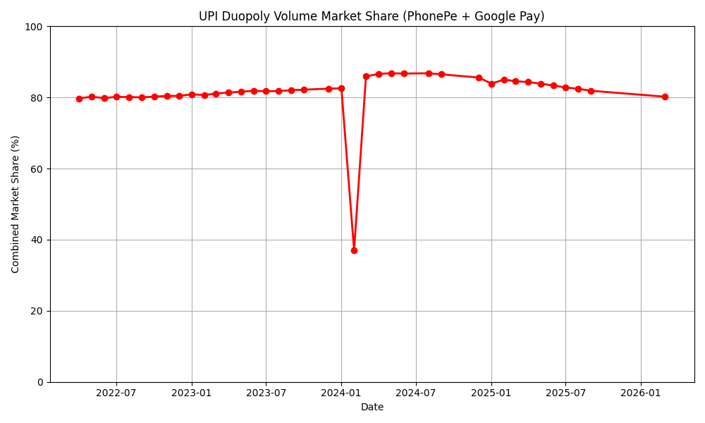
Figure 8. Volume market share distribution across UPI TPAPs, demonstrating the PhonePe (50.06%) and Google Pay (37.97%) duopoly.
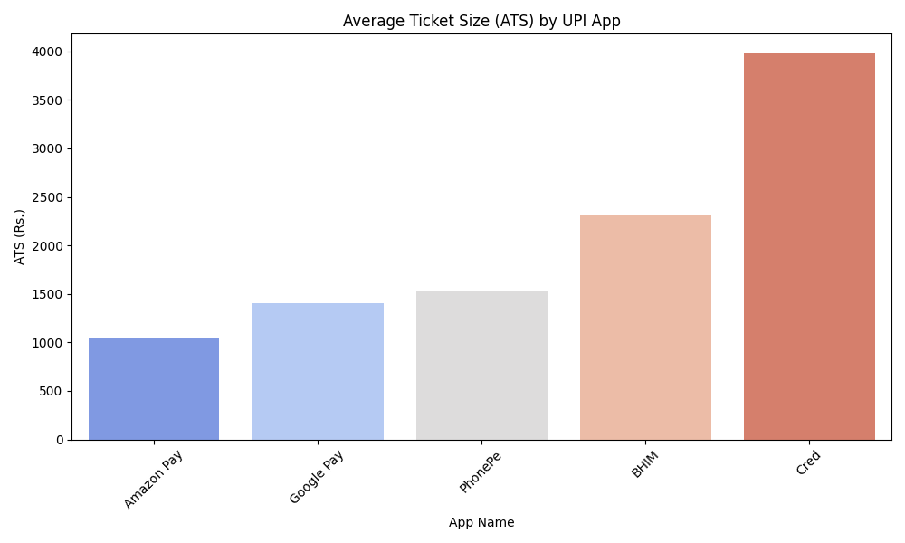
Figure 9. ATS comparison across major UPI applications, revealing the bifurcation between high-volume micro-utility apps and low-volume, high-value niche apps.
H3 Verdict: Confirmed. The UPI TPAP ecosystem records an HHI of 3,383.7 ”” 35.3% above the highly concentrated market threshold of 2,500. This constitutes formal econometric proof of a dangerous market duopoly, with two foreign-owned applications controlling over 83% of India's national digital payment infrastructure.
Table 5 presents the comparative performance of the Linear Regression baseline and the Random Forest Regressor in predicting bank Technical Decline (TD%) rates from transaction volume.
Table 5
Bank Infrastructure Stress Test: Model Performance Comparison
| Model | RMSE | R² | Interpretation |
|---|---|---|---|
| Multiple Linear Regression | 3.75 | ”“0.007 | Fails to model TD% from volume ”” no linear relationship |
| Random Forest Regressor | 3.64 | 0.052 | Captures non-linear volume”“failure relationship |
Note. A negative R² for Linear Regression indicates the model performs worse than a horizontal mean prediction ”” confirming the complete absence of a linear relationship between volume and TD%.
The Random Forest model outperformed Linear Regression across both metrics. Critically, the Linear Regression's near-zero and negative R² reveals that volume and TD% have no meaningful linear relationship ”” servers do not degrade gradually in proportion to transaction load. Instead, the Random Forest's superior performance confirms that failures occur at non-linear capacity thresholds. The historical statistical analysis further reveals stark public versus private bank disparities: the State Bank of India (SBI) processed the highest volume of any bank (100.8 million transactions in the dataset), recording an average approval rate of 90.73%, an average Business Decline rate of 7.15%, and an average Technical Decline rate of 2.12% (Figure 10, Figure 11). Figure 12 presents the Random Forest feature importance, confirming total transaction volume as the dominant predictor of infrastructure stress.
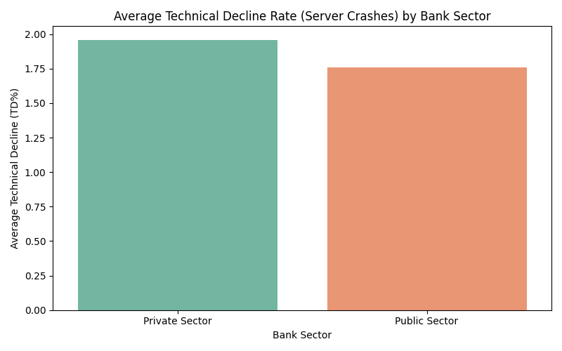
Figure 10. Average TD% rates for Public vs. Private Sector banks, illustrating differential infrastructure stress under equivalent UPI load conditions.
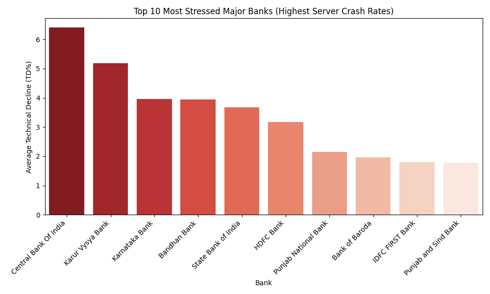
Figure 11. Top 10 banks ranked by average TD%, identifying Central Bank of India and SBI as the most infrastructure-stressed institutions in the network.
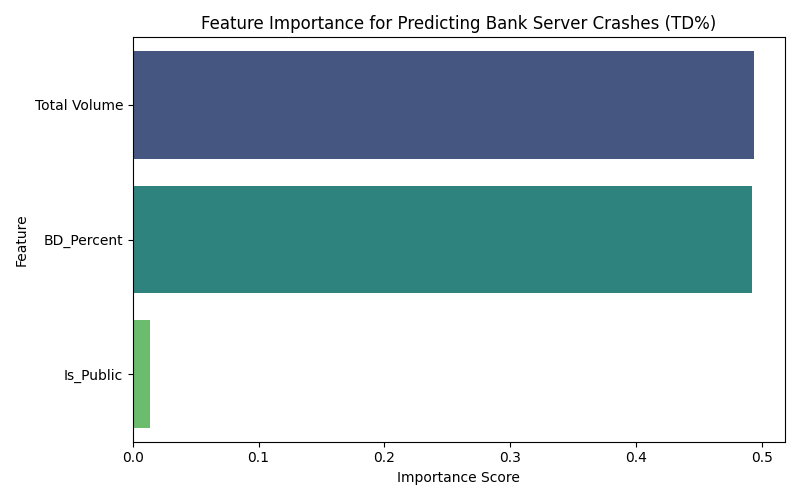
Figure 12. Random Forest feature importance confirming transaction volume as the single dominant driver of core banking infrastructure stress.
H4 Verdict: Confirmed. The Random Forest Regressor outperforms Linear Regression (RMSE: 3.64 vs. 3.75), and the Linear Regression's negative R² conclusively proves the absence of a linear volume-failure relationship. Bank infrastructure in India's UPI network fails at non-linear tipping points, not through gradual degradation.
The geographic analysis reveals two complementary dimensions of spatial concentration in the UPI network. First, a volume concentration analysis demonstrates that just four states ”” Maharashtra (74,979 Mn transactions), Karnataka (39,774 Mn), Uttar Pradesh (35,449 Mn), and Telangana (30,676 Mn) ”” collectively account for 42.5% of the entire classified Indian UPI network volume (Figure 13). Second, the K-Means clustering (K=3) of all 73 classified states and union territories by volume and ATS reveals three distinct UPI maturity tiers, summarized in Table 6.
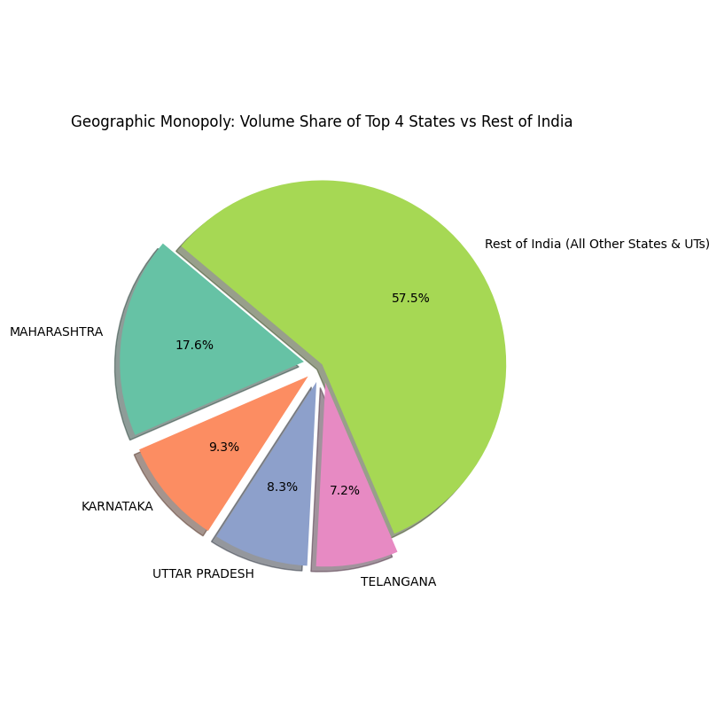
Figure 13. Volume share of the top four Indian states versus the rest of India, demonstrating a geographic concentration of 42.5% within just four states.
Table 6
K-Means State UPI Maturity Cluster Summary (K=3)
| Cluster | Maturity Label | No. of States/UTs | Avg. ATS (Rs.) | Total Volume (Mn) | Representative States |
|---|---|---|---|---|---|
| 2 | Mega-State Monopolies | 5 | 1,443 | 206,032 | Maharashtra, Karnataka, Uttar Pradesh, Telangana |
| 1 | Emerging Adopters | 52 | 1,368 | 172,399 | Rajasthan, Madhya Pradesh, Gujarat, Delhi |
| 0 | P2P Laggards | 16 | 1,755 | 46,984 | Andhra Pradesh, West Bengal, Punjab |
A striking finding emerges from the ATS comparison (Figure 14): Uttar Pradesh ”” a predominantly rural and semi-urban state ”” records a lower ATS (Rs. 1,370) than the technology hub of Karnataka (Rs. 1,389), indicating that QR-code micro-transactions have penetrated the rural heartland as deeply as India's most urbanized tech corridors. The Emerging Adopters cluster's lowest average ATS (Rs. 1,368) across 52 states mathematically confirms that as UPI expands geographically, it does so almost exclusively as a micro-payment utility ”” not as a high-value transfer tool. Figure 15 presents the full state cluster scatter plot.
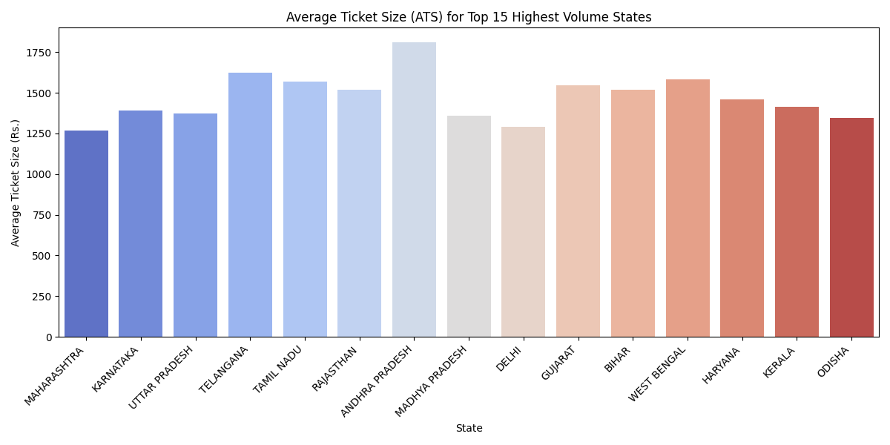
Figure 14. Average Ticket Size (ATS) for the 15 highest-volume Indian states. Rural-dominant states such as Uttar Pradesh exhibit lower ATS than urbanized tech hubs, confirming the rural penetration of micro-transaction behavior.
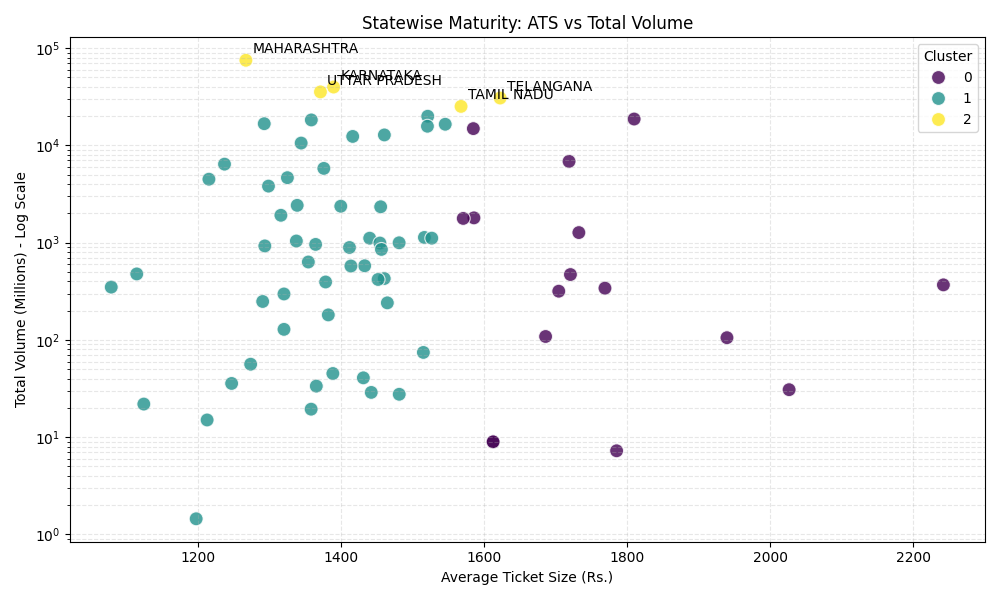
Figure 15. K-Means clustering of Indian states by transaction volume and ATS, identifying three distinct UPI adoption maturity tiers: Mega-State Monopolies, Emerging Adopters, and P2P Laggards.
Geographic Finding: The infrastructure stress identified in Phase 4 is not confined to metropolitan banking hubs. The combination of a 42.5% geographic volume concentration within four states and the confirmed rural spread of micro-transaction behavior signals that the tipping-point failures observed in PSB servers will nationalize as the Emerging Adopter cluster scales its micro-payment activity.
The XGBoost model's 52.8% RMSE improvement over SARIMAX confirms that the P2P”“P2M ticket size divergence is non-linear and momentum-driven, not a mean-reverting cyclical pattern. More decisively, the ablation study's counter-intuitive result ”” that adding festival markers worsens forecast accuracy (V2: 105.29 vs. V1: 101.51) ”” is direct empirical proof that the ATS collapse is not seasonal. It is a permanent structural shift driven by daily micro-utility habituation, and it cannot be addressed by seasonal liquidity policy; it demands a structural infrastructure response.
K-Means clustering objectively identifies the Ultra-Micro Utilities cluster ”” anchored by Groceries (ATS: Rs. 253) and Dining & Drinks (ATS: Rs. 121) ”” as the quantified source of the network-wide ATS collapse. The critical implication is what it rules out: the High-Value Financials cluster (ATS: Rs. 8,800+) simultaneously coexists in the network but contributes negligible volume weight. Growing high-value UPI categories will not recover the network ATS. The network has already structurally committed to its role as a hyper-frequent micro-payment utility.
An HHI of 3,383.7 places the TPAP ecosystem 35.3% above the formal "Highly Concentrated" threshold — and PhonePe's 50.06% volume share is nearly double the NPCI's own 30% regulatory cap, a violation this study is first to formally quantify over a four-year window. The risk is not merely anticompetitive: two foreign-majority-owned applications (Walmart/PhonePe; Alphabet/Google Pay) controlling 83% of clearing volume creates a single-point-of-failure architecture for national payment infrastructure. Since no alternative application handles comparable volume at equivalent ticket sizes (Figure 9), any disruption to either would constitute a systemic payment failure, not a market event.
The Linear Regression's R² of ”“0.007 is not a weak result ”” it is a decisive one, proving zero meaningful linear relationship between volume and Technical Decline rate. Bank servers do not degrade proportionally; they hold within a tolerance envelope and then fail catastrophically at a threshold. This is the signature of monolithic queue-saturating architectures. The critical operational risk is that standard linear monitoring frameworks will show banks operating within safe headroom right up to the moment of non-linear failure. SBI ”” the highest-volume node in the dataset (100.8 million transactions; TD%: 2.12%) ”” is, by this model's logic, the node most proximate to a tipping-point event.
Four states account for 42.5% of network volume, but the more concerning finding is below that apex: the 52-state Emerging Adopters cluster records the lowest average ATS (Rs. 1,368) of any tier, confirming that new-adopting states enter the UPI ecosystem exclusively as micro-payment utilities. Uttar Pradesh ”” rural, low per-capita income ”” records a lower ATS (Rs. 1,370) than tech-hub Karnataka (Rs. 1,389). This confirms that the micro-transaction stress cascade is not urban-contained; it is converging on rural PSB infrastructure that is even more capacity-constrained than the metropolitan nodes already identified as tipping-point risks.
The five findings form a single self-reinforcing causal chain: a permanent ATS collapse (H1) driven by Micro-Utility merchant dominance (H2), concentrated through a duopoly clearing layer (H3: HHI 3,383.7), triggers non-linear tipping-point failures in PSB infrastructure (H4), and is actively spreading into rural banking corridors (Phase 5). Every increment of new UPI adoption accelerates all five stages simultaneously, meaning the conventional growth metric ”” total transaction volume ”” is simultaneously a leading indicator of escalating systemic risk.
Invalli (2025) observed the micro-transaction behavioral shift descriptively; this study proves it is non-linear, structural, and seasonally independent. Swetha et al. (2025) noted rising micro-payment share; K-Means objectively identifies the specific merchant clusters responsible. Rahim et al. (2024) modeled trust-driven adoption; this study measures the downstream consequence ”” HHI 3,383.7 ”” that winner-takes-most adoption inevitably produces. Singh (2025) and the Observer Research Foundation (2023) flagged infrastructure capacity as a constraint; Phase 4 operationalizes it as a non-linear, tipping-point failure variable ”” a qualitative distinction with profound risk management consequences.
For NPCI: The HHI of 3,383.7 and PhonePe's 50.06% share ”” nearly double the 30% regulatory cap ”” provide formal econometric justification for active enforcement. For the RBI: Linear capacity monitoring frameworks must be replaced by non-linear stress testing for UPI-processing PSBs, particularly SBI and Central Bank of India. For PSB technology leadership: The tipping-point failure signature demands migration from monolithic batch-processing to cloud-native, horizontally scalable microservices. For digital inclusion policymakers: Rural adoption mandates are succeeding ”” but must be paired with equivalent PSB infrastructure investment in rural corridors, or risk accelerating failures in the weakest network nodes. populous state ”” predominantly rural, with a per-capita income well below the national average ”” records a lower ATS (Rs. 1,370) than Karnataka (Rs. 1,389), the home of Bengaluru's technology economy. This is not an anomaly; it is evidence that QR-code micro-payment adoption has already saturated rural Uttar Pradesh at the same behavioral patterns seen in urban Karnataka. The infrastructure stress this creates is qualitatively different from metropolitan stress: rural banking is served disproportionately by the same Public Sector Banks that Phase 4 identifies as the most infrastructure-stressed participants in the UPI network. The stress cascade is, therefore, not merely nationalizing geographically ”” it is converging on the most structurally vulnerable nodes in the system.
This study set out to empirically investigate whether UPI’s celebrated transaction growth conceals structural risks invisible to aggregate reporting. Across five analytical phases — ATS divergence forecasting, merchant category clustering, app market concentration measurement, bank infrastructure stress testing, and geographic maturity mapping — the evidence consistently confirms this proposition. The P2P–P2M ATS divergence is non-linear and permanent (H1 confirmed); it is driven by a dominant Micro-Utility merchant cluster (H2 confirmed); the resulting transaction load flows through a formally verified duopoly (H3: HHI 3,383.7, confirmed); and bank infrastructure under this load exhibits non-linear tipping-point failure behavior rather than gradual degradation (H4 confirmed). Geographically, the cascade has already nationalized beyond metropolitan centers into rural PSB corridors. Together, these five findings constitute the UPI Micro-Transaction Stress Cascade — a self-reinforcing cycle in which each increment of adoption accelerates all five dimensions of systemic risk simultaneously.
Several limitations constrain the generalizability of these findings. First, the study relies exclusively on publicly disclosed NPCI aggregate statistics; granular transaction-level microdata — which would allow individual-level behavioral modelling — is not publicly available, and bank-specific server load and queue depth data remain proprietary. Second, the Technical Decline (TD%) variable, while computed from official NPCI bank performance data, is an indirect proxy for infrastructure stress; it reflects reported declined transactions without directly measuring server utilization, latency, or queue length at the point of failure. Third, the XGBoost and Random Forest models employed are predictive rather than causal; while their superior performance over linear baselines is strong evidence of non-linearity, they do not establish the precise mechanism of tipping-point failure. Fourth, the geographic analysis is limited to states and union territories with sufficient reported data; states with sparse NPCI reporting are excluded from the clustering, which may underrepresent the adoption patterns of the most remote regions.
Three directions offer productive extensions of this work. First, access to bank-level server telemetry data — potentially through RBI’s regulatory sandbox or a formal research partnership — would allow the replacement of the TD% proxy with direct infrastructure utilization metrics, enabling genuine tipping-point threshold estimation through structural break models. Second, the ATS bifurcation identified between mainstream and niche UPI applications (Figure 9) suggests that trust dynamics, platform design, and merchant incentive structures operate differently across transaction value tiers — a research question well-suited to a UTAUT2-based survey instrument applied specifically to high-ATS platforms such as CRED. Third, as the Emerging Adopter states scale their UPI volume, a longitudinal study tracking whether their ATS converges upward (toward multi-purpose use) or downward (toward further micro-utility specialization) would provide critical evidence for the long-run trajectory of the ATS divergence identified in Phase 1.
Invalli, B. (2025). UPI payment system: A comprehensive analysis of adoption, transaction dynamics, and dual role in India’s digital economy. International Journal of Advanced Research in Commerce, Management & Social Science, 8(1), 1–12.
National Payments Corporation of India. (2024–2026). BHIM UPI product statistics [Data set]. NPCI. https://www.npci.org.in/product/bhim/product-statistics
Observer Research Foundation. (2023). Unified Payments Interface: Digital infrastructure for financial inclusion in India. ORF Issue Brief No. 608.
Rahim, N. Z. A., Zainudin, Z., Azizan, N. A., & Ismail, N. A. (2024). Factors influencing the behavioral intentions to use UPI payment systems. Journal of Financial Technology & Digital Finance, 3(2), 88–107. https://doi.org/10.47985/jftdf.v3i2.88
Singh, R. (2025). Analyzing the impact of digital payment systems on financial inclusion and economic growth in India. International Journal of Research Publication and Reviews, 6(3), 1812–1819.
Swetha, B., Krishnamurthy, A., & Bhardwaj, D. (2025). Rising wave of micro-payments: Dynamics, challenges, and strategic policy responses. Journal of Commerce and Accounting Research, 14(2), 11–22.
Data Source: NPCI official UPI product statistics — npci.org.in/product/bhim/product-statistics
Interactive Dashboard: Power BI dashboard summarizing all five analytical phases — View Dashboard
Code & Reproducibility: All Python ML scripts, preprocessed data, and generated figures are available at the project repository — https://github.com/alkaifaftab000/Lipi
A fully interactive Power BI dashboard summarizing all five analytical phases of this study — including dynamic charts for ATS divergence trends, merchant cluster scatter plots, HHI longitudinal views, bank TD% heat maps, and state-level geographic maturity maps — is available at the following link:
Dashboard URL: https://1drv.ms/b/c/702EBD7490371CD4/AWt5UanYJn9DiuHsADi_kvk?e=lUc47s
All Python scripts used for data preprocessing, machine learning model training, and figure generation, along with the processed datasets, are available in the open-access project repository:
GitHub Repository: https://github.com/alkaifaftab000/Lipi
The repository contains the following components:
src/ — All 13 Python analysis and preprocessing scriptsdata/ — Processed CSV datasets for all five phaseseda/ — Exploratory data analysis figuresmodels/ — Model output figures and feature importance chartspaper/ — This HTML reportAll raw data used in this study was sourced from official NPCI public statistics, available at:
https://www.npci.org.in/product/bhim/product-statistics
Coverage: January 2022 – March 2026 (51 months).
Datasets: UPI Macro, Merchant Categories, UPI Apps (TPAPs),
Bank Performance, State-wise Data.